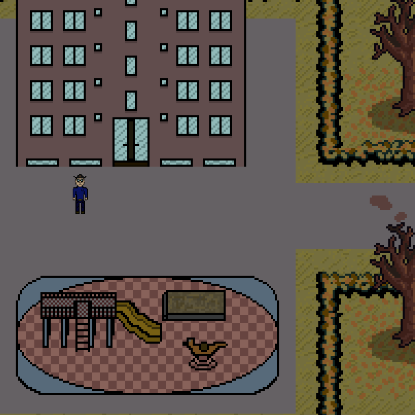
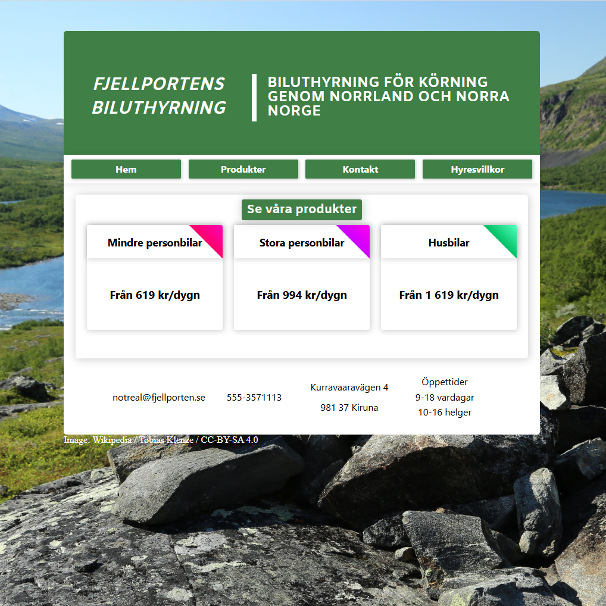

Aaron Lindahl
Uppsala, Sweden
Portfolio and Projects
Fjellporten Hemsida Liljans Blommor GraveGuard


- Fourth year of the Technology Programme at NTI gymnaset in Uppsala
- Informationsteknologi - möjligheter och utmaningar 10,0 hp
- Introduction till ledarskap 5,0 hp
- Kvalitetsteknik - 10,0 hp
- Projekt och ledning - 15,0 hp
- Människa-dotorinteraktion 5,0 hp
- Technology Programme with a specialisation in Information and Media Technology at grillska gymnaset Uppsala
- Ceo for a UF company - posters n crafts
About
I am easygoing yet profesional,
i am dedicated to my work and good at adapting to any new chalanges that may
come my way.
My ability to learn and adapt quickly is one of my biggest strengths.
My hope in any work place is to create something i can be proud of
Education
Upper Secondary Engineering Degree | 2026 - OngoingUniversity education | 2025 - 2026
High school | 2022 - 2025
Web development
Game development
Visual Studio Code
Godot
Blender
Auto Cad
JavaScript
HTML
css
GDScript
Python
github
Playwright
NextJS
React
scrum